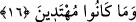

Allah Teâlâ dünyâda bir kısım düşmanlarına çokça mal vermiştir. Âhırette ise mü’min
kullarına uzun uzun gölgelikler hazırlamıştır. Allah Teâlâ Mi’râc gecesi Hz. Peygamber
(s.a.)’a şöyle buyurmuştur: “Benim senin ümmetine olan nimetlerim içerisinde şunlar
da var. Günahları çok olmasın diye ömürlerini kısa yaptım. Kıyâmet günü hesap
vermeleri zor olmasın diye az mal verdim. Kabirlerde kalma süreleri uzun olmasın
diye de onları son zamanda yarattım.”
Rivâyet olunduğuna göre Allah Teâlâ hazretleri yine Mi’râc gecesi Habibi Hz.
Muhammed (s.a.)’a şöyle vahyetmiştir: “Yâ Ahmed! Yumuşak elbiseler giymeye, güzel
yemekler yemeye ve kadınlarla beraber olmaya fazla aldırış etme. Çünkü nefis her
şerrin mekânı ve bütün kötülüklerin arkadaşıdır. Sen onu tâata zorladıkça o seni
mâsiyete çekmeye çalışır. Tâat yaparken sana muhâlefet ettiği halde mâsiyette sana
itâatkâr olur. Doyunca azar, ihtiyaçsız kaldıkça kibirlenir, hatırlandıkça unutur ve
emniyette oldukça gaflete düşer. O şeytanın arkadaşıdır.” Mişkâtü’l-Envâr’da böyle
geçmektedir.
16. İşte onlar, hidâyete karşılık dalâleti satın alanlardır. Ancak onların bu ticâreti
kazançlı olmamış ve kendileri de doğru yola girememişlerdir.
Yukarıda onları başkalarından ayıran çirkin özellikleri sanki kendileri hazırlamışlar
da seyrediyorlarmış gibi anlatılan ve son derece şerli kimseler oldukları belirtilen
münâfıklar, akılsızlıkları sebebiyle hidâyeti kabûl etmeyip sapıklığı tercih etmişlerdir.
Âyet-i kerîmede “onlar” karşılığında uzak için kullanılan “
” işâret ismi tercih
edilmiştir. Bu, onların şerdeki ve kötü haldeki aşırılıklarına işâret içindir.
İştirâ; yâni satın almak, aslında istenilen bir eşyâyı elde etmek için para harcamak
demek iken sonraları “Başka bir şey kazanmak için kişinin, elinde bulunandan vaz
geçmesi” mânâsına sokulmuş ve nihâyet mecâz yoluyla “bir şeye duyduğu arzu
sebebiyle başka bir şeyden yüz çevirmek” anlamında kullanılmıştır. Âyette ise
münâfıkların tutum ve davranışlarını ifâde eden bir mefhûm olarak anlaşılmaktadır.
Münâfıkların küfür, hak ve doğruluktan dönme anlamındaki sapıklığı; îmân ve doğru
yolda yürümek mânâsı taşıyan hidâyete karşılık satın almaları; hidâyetten yüz çevirerek,
isteyerek sapıklığı satın almalarına benzetilmiştir. Yâni onlar, dalâleti hidâyete tercih
ettiler, dalâleti hidâyetle değiştirdiler ve hidâyet yerine dalâleti aldılar, demektir.
Yapılan bu açıklamalardan sanki hidâyet, münâfıkların elinde imiş gibi, bir anlam
çıkmaktadır. Aslında bu, onlardaki hidâyeti kabûl edebilmek istidâdını gösterir. Fakat
münâfıklar sapıklığa meyletmeleri sebebiyle bu isti’dâdlarını işlemez hâle
getirmişlerdir.